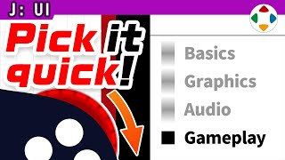
速览
任天堂开发新主机时，樱井有时会被征求功能提案。从 GameCube 开发、企划《大乱斗 DX》那时起，他就反复提了一个手柄需求：想要滚轮（以前叫飞梭/jog dial）。如今鼠标标配滚轮，用过的人都懂它的方便。游戏要处理各种输入，其中菜单选择尤其想要快——如果能用滚轮「唰」地选中、「啪」地决定就好了。不只菜单，游戏里从大量对象中指定一个的场面到处都是。他还希望滚轮有咔哒的段落感：游戏是玩乐，有手感就更有实在感。当然滚轮占地方、难装进硬件，被否决也能理解。现在大家用模拟摇杆「咚咚咚」地拨菜单，但他并不满意那种手感，十字键也许更好。本集看似在聊当年对新设备的期待，其实重点是重新审视已经变得理所当然的东西：他至今仍想合理地改进用手柄操作菜单/UI 的感觉；不过只有熟手才会用的便利捷径，可能变成普适性下降的 UI，这也是难处。
1. 给新主机的提案：滚轮 0:04
任天堂开发新机种时，有时会请樱井提功能建议。从 GameCube 开发、企划《大乱斗 DX》开始，他就反复提一个要求：手柄上加一个滚轮，用老说法就是飞梭（jog dial）。
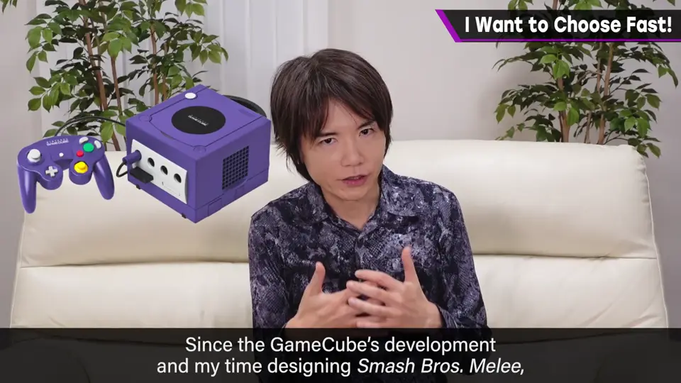
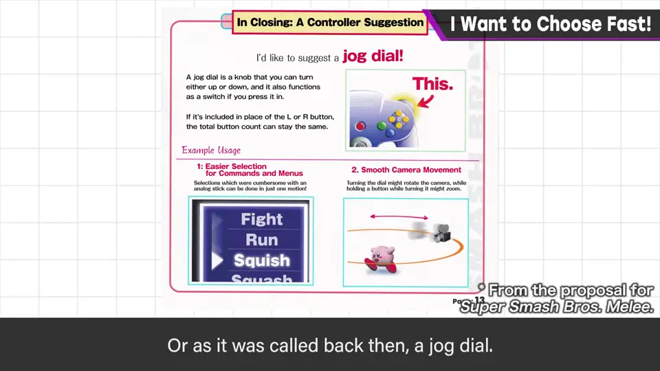
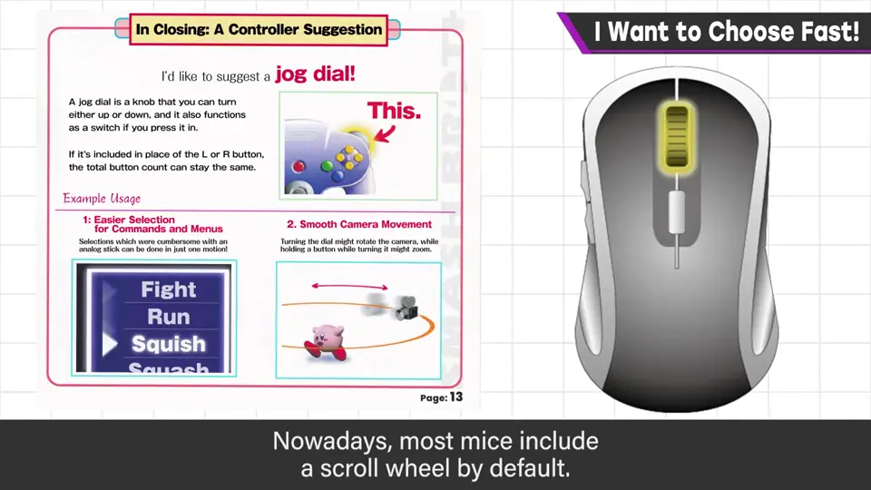
现在的鼠标都标配滚轮，用过的人都懂它的方便。
2. 为什么想要它 0:39
如果游戏机有滚轮，菜单选择会方便得多。游戏要接受各种输入，其中想让菜单选择这类操作尽量快。
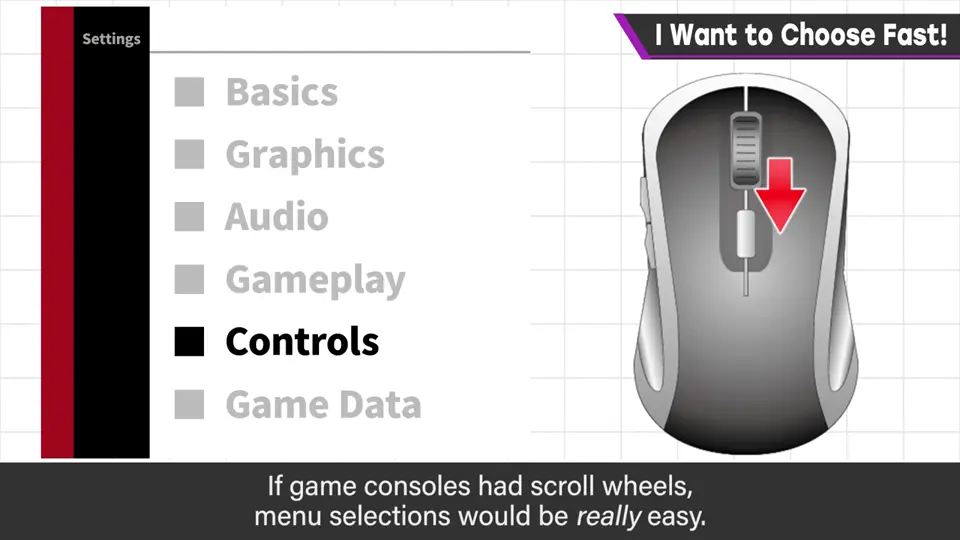
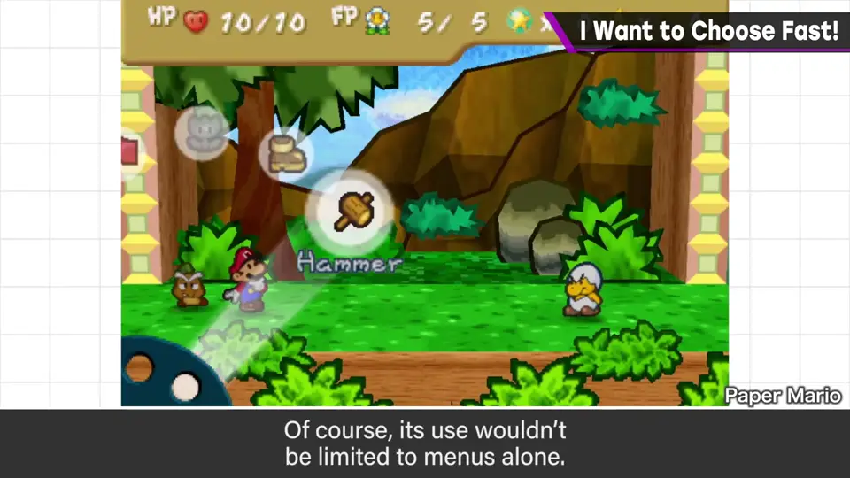
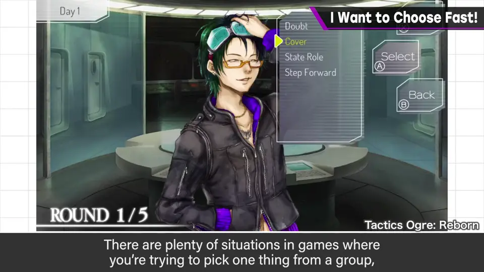
3. 带段落感的滚轮 1:16
他当时还希望滚轮有「咔哒咔哒」的段落感：游戏是玩乐，有手感就更有实在感。
- 当然滚轮比想象中大，难装进硬件，被否决也很正常。
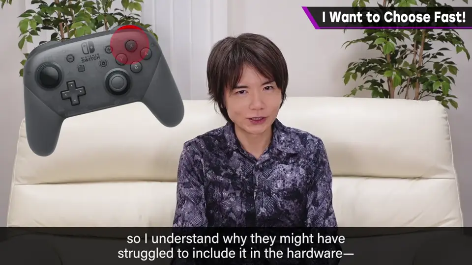
4. 现在的菜单操作 1:38
现在一般是把模拟摇杆「咚、咚、咚」地拨来选菜单，但他对那种手感并不满意——也许十字键更好，有段落感。
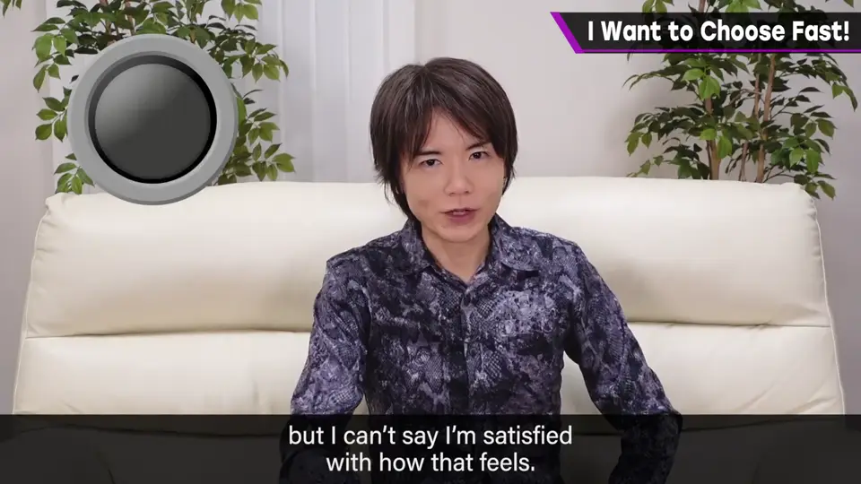
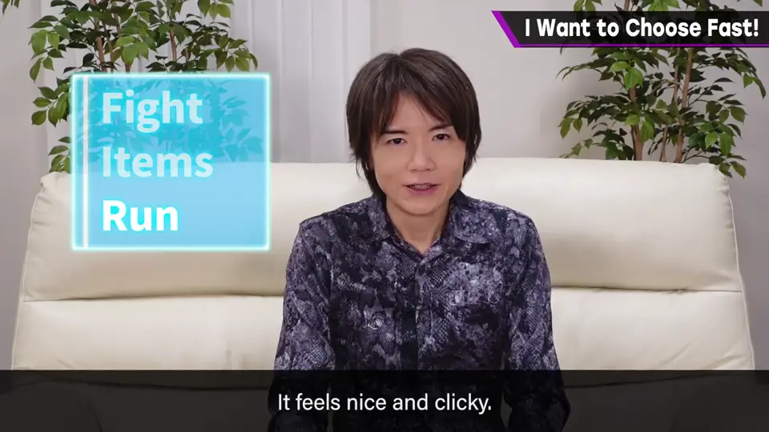
5. 重新审视理所当然 2:06
这次虽然聊的是当年对新主机设备的期待，但更想说的是重新审视已经变得理所当然的东西。
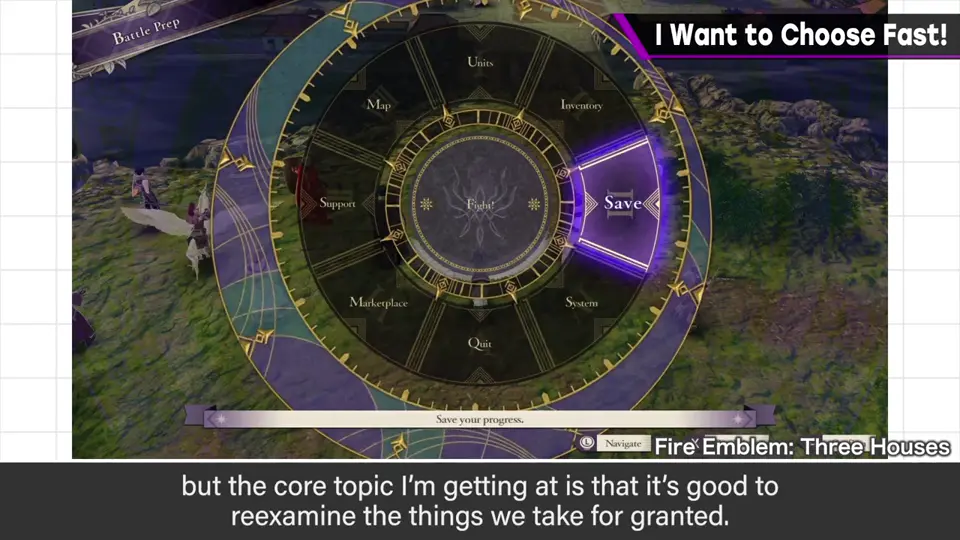
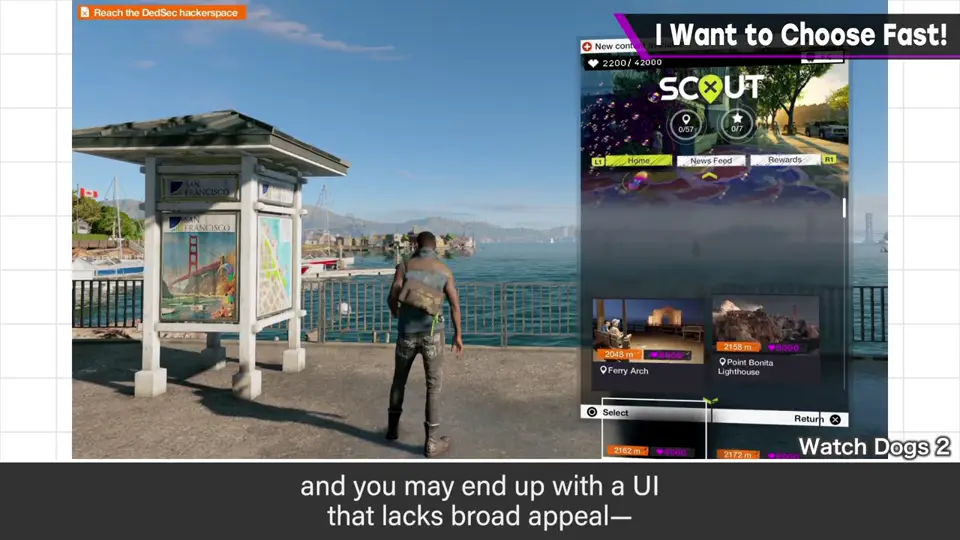
他至今仍想合理地改进用手柄操作菜单/UI 的手感。但另一方面，只有熟手才能顺畅用上的便利捷径，可能做出普适性下降的 UI，这是难点。
自测题
1. 樱井多次向任天堂提议的手柄功能是什么？
滚轮（飞梭 / jog dial），用来快速选择菜单等。 0:22
2. 为什么他希望滚轮有「咔哒」的段落感？
游戏是玩乐，有手感会让操作更有实在感。 1:16
3. 本集真正想强调什么？难点又是什么？
重新审视理所当然的菜单/UI 操作；难点是只为熟手准备的捷径会降低普适性。 2:10